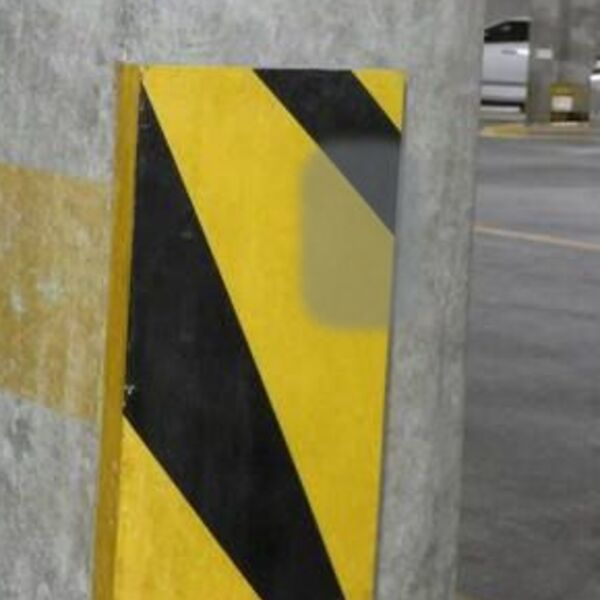
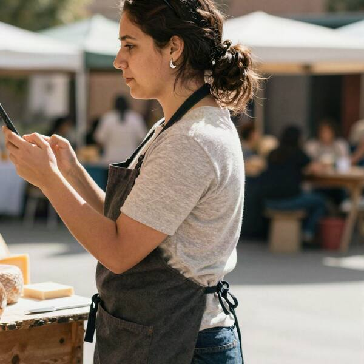

Evidencia digital · fuente abiertaRevisión de redes sociales
E16Redes sociales de los sospechosos
benja.ferrada

Lunes de porquería. Un pilar del estacionamiento del mall se me cruzó. #malaracha26 de octubre
pia.quesosdelsur

Sábado de feria en la Pinto, con mis aros de la suerte17 de octubre
Las redes de Don Hernán, Toto y la Dra. Rivas no muestran nada de esa noche. Las publicaciones de Javiera están en E03. Esta revisión solo cubre publicaciones públicas: la transmisión en vivo de esa noche no queda publicada en su perfil.
 Open CaseEl Chupacabras de Labranza
Open CaseEl Chupacabras de Labranza